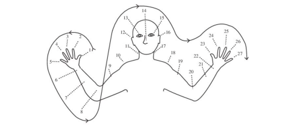
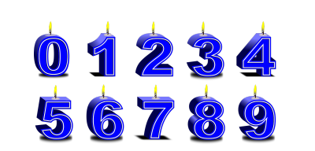

Sistema Posicional Decimal
Se você pensar por dois segundos, vai reconhecer milhões de situações em que os números são usados à sua volta. Mesmo na frase anterior, usamos números para falar de números!
Por exemplo, todos nós, em algum momento da vida, ficamos maravilhados contando as estrelas no céu noturno.
Clique nas estrelas da imagem e deixo que o computador lhe mostre algumas estrelas.
Agora tente contar o máximo de estrelas que estiveres vendo nesse “mapa do céu”. Tentou? É difícil, não é?
Em muitas culturas, o uso de partes do corpo para contar determina a maneira como representamos quantidades e números. Uma forma de contar que nós humanos usamos para contar foi usando os dedos das mãos.
Clique no vídeo abaixo e veja como se conta com as mãos um até dez.
Mas o que aconteceria se precisássemos contar 20 (vinte) maçãs? Bem, poderíamos contar de cinco em cinco, usando as mãos, até chegarmos a vinte.
Algumas pessoas que moram num pais chamado Papua Nova Guiné, utilizam pontos do corpo para poderem contar até 20 (vinte). Veja como eles fazem:
E se precisássemos contar até mil?
Bem, nesse caso, precisaríamos usar mais do que as mãos. Foi assim que pudemos inventar os ALGARISMOS.
Nós usamos os chamados Algarismos Hindu-arábicos ou Decimais. Na imagem a seguir, você pode ver a representação dos números Zero, Um, Dois, Três, Quatro, Cinco, Seis, Sete, Oito, Nove.
Entre com os algarismos correspondentes aos números de maçãs apresentados a seguir.
🍎🍎 + 🍎🍎🍎 = 🍎🍎🍎🍎🍎
? + ? = ?
Unidades
Cada algarismo representa um determinado número de unidades. Por exemplo, 1 representa uma unidade. Já o 9 representa __ unidades.
Uma unidade pode ser qualquer coisa, como uma maçã, uma laranja, uma estrela ou um cachorro.
Exemplos de Unidades
Uma unidade, por exemplo, pode ser um ladrilho.
Vejamos um exercício para podermos entender melhor a ideia de unidade aplicada a um problema.
Um arquiteto está planejando o piso de um grande pátio que mede 18m por 30m. Ele quer que ela seja coberta de ladrilhos quadráticos, sem folgas ou sobreposições nas laterais. Qual é o maior tamanho de quadrados que ela pode usar?(Fonte: Mathigon
Algarismos Decimais
Você já deve ter visto esses algarismos em vários cantos de sua casa ou em outros locais.
Letreiro Interativo


E como podemos usar esses algarismos hindu-arábicos para contar quantidades maiores que 9 (nove)? Os seres humanos tiveram uma ideia realmente genial para esse propósito.
💡Combinar esses dez algarismos para expressar as diferentes quantidades, mais ou menos como combinamos as letras para formar.
Por exemplo, o número 12 (doze) significa:
12 = 10 + 2
onde 10 = __+ 1 unidades. Da mesma forma:
12 = _ + _ + 1 + 1.
Observe que 12 é composto de uma dezena (dez unidades), mais 2 unidades. O algarismo 1, no número 12, indica uma dezena e não uma unidade.
📢Você deve ter visto, no texto acima, que quando se quer mostrar que um numero vai ser SOMADO a outro se usa o sinal +. Pois é a Soma é quando você acrescenta uma determinada quantidade de unidades de um número a outro número.
Por exemplo:
2 + 3 = 5, ou ainda,
🍎🍎 + 🍎🍎🍎 = 🍎🍎🍎🍎🍎
Veremos mais sobre o que seja a Soma em outra parte de nosso material.